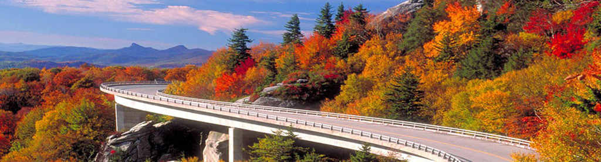
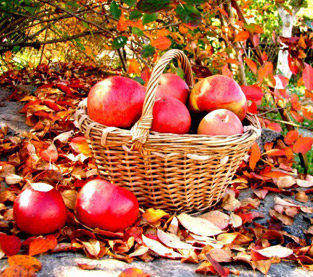
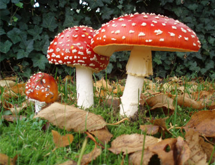
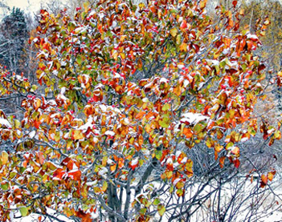

Осень самое яркое время года, когда природа меняет свой привычный облик на золотые краски в осенних лучах уходящего тепла. Осень состоит из трех месяцев: сентябрь, октябрь и ноябрь.
Три осенних месяца: ласковый сентябрь, дождливый октябрь и холодный ноябрь. Природа готовится к длительному отдыху. И если начало осени еще дружелюбно тешит ласковыми лучами бабьего лета, очаровывает красотой золотых красок, то со второй половины осени погода значительно портится и небо затягивается серой пеленой моросящих дождей.
  